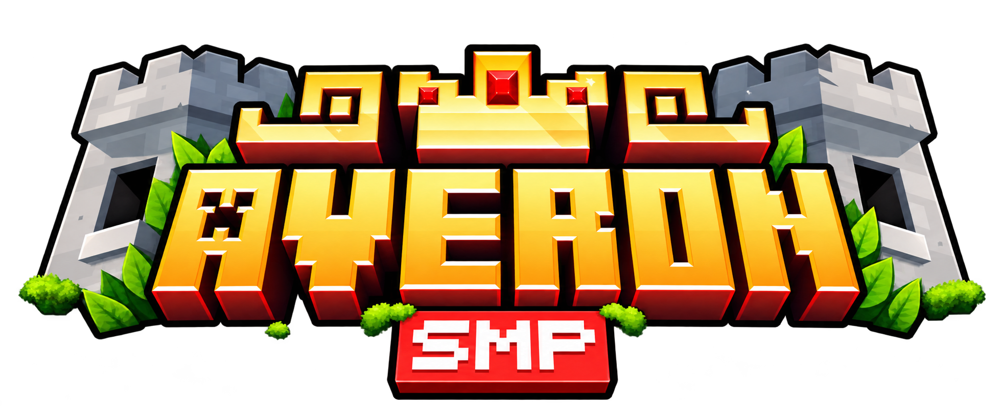

Verificando atualizações…
Preparando sua próxima aventura
AVERON SMP
Apagar a instalação local e baixar novamente?
Seu nickname, memória, teclas, vídeo, sensibilidade e configurações dos mods serão mantidos.
A paisagem do Distant Horizons e seus schematics também serão mantidos.
Isso remove os arquivos do jogo, mods, mundos salvos e screenshots. Não há como desfazer.
Feche o Minecraft antes de continuar. O modpack será recebido ao entrar no servidor.
O servidor está salvo com mais de um nome. Escolha o cadastro que você usa para entrar no Minecraft.
A paisagem será instalada na pasta desse cadastro. Seus servidores e dados existentes serão mantidos.